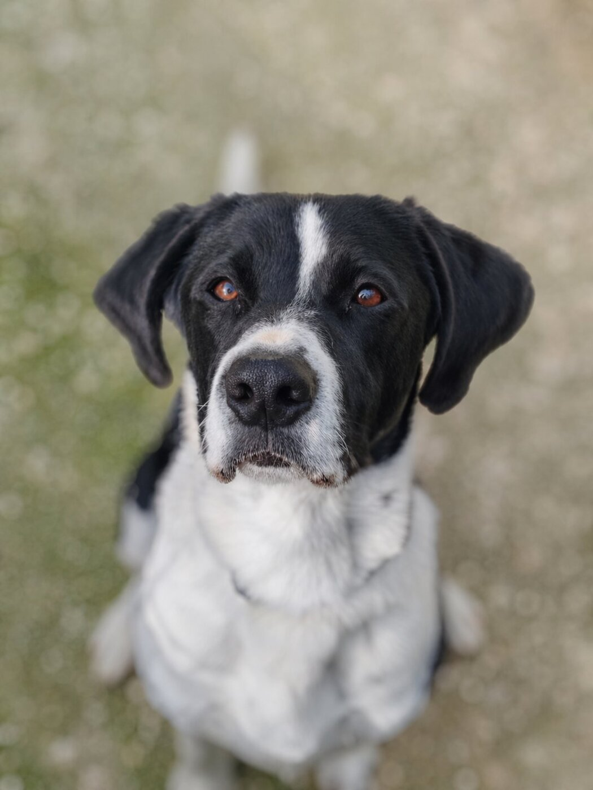
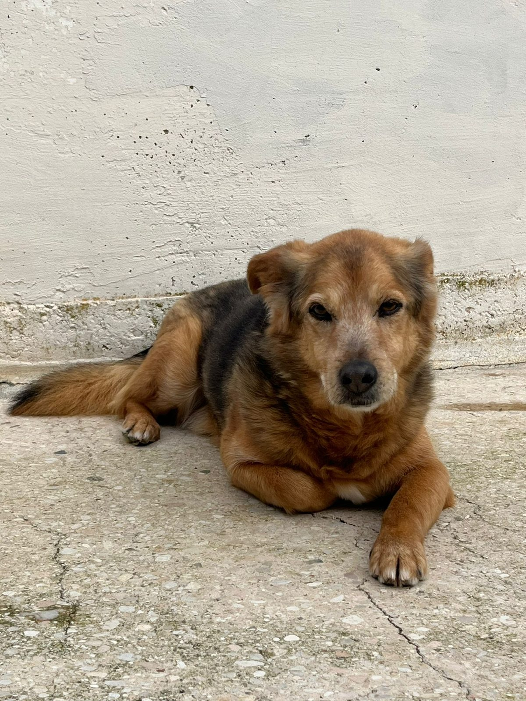
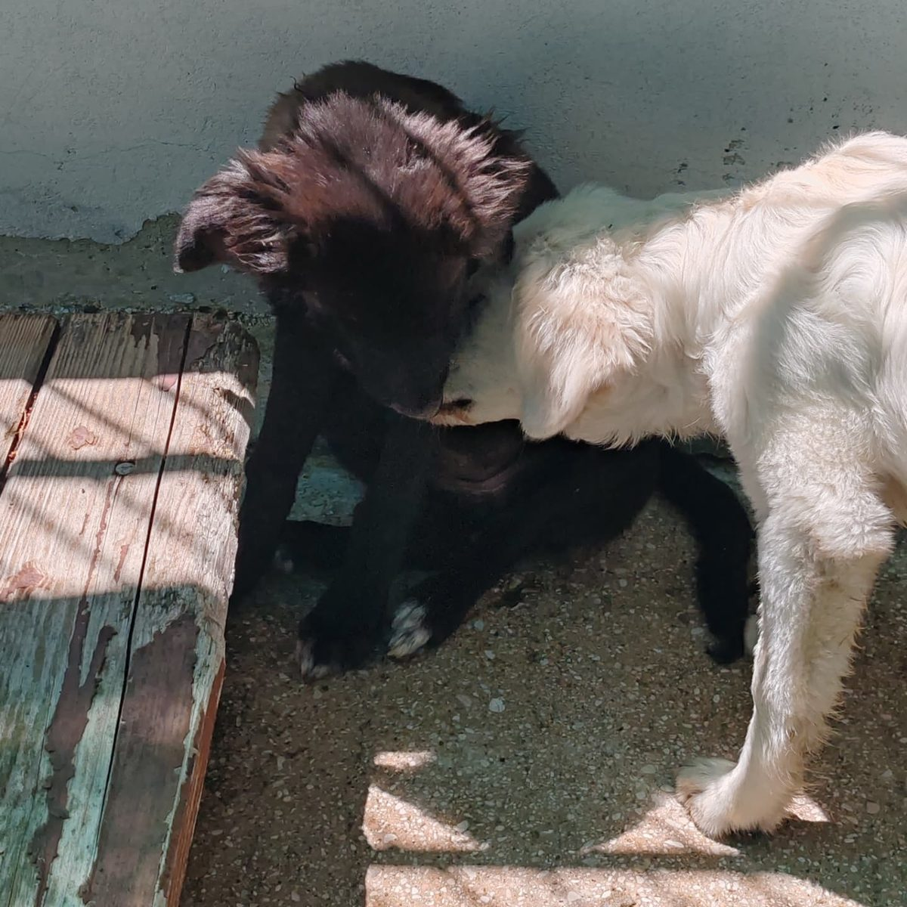
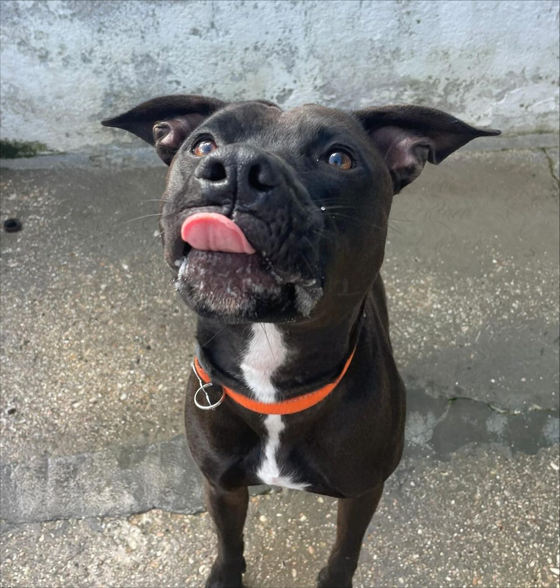
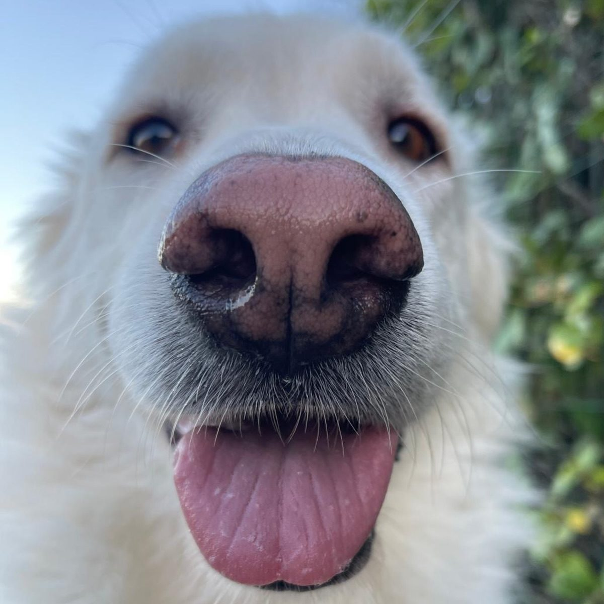
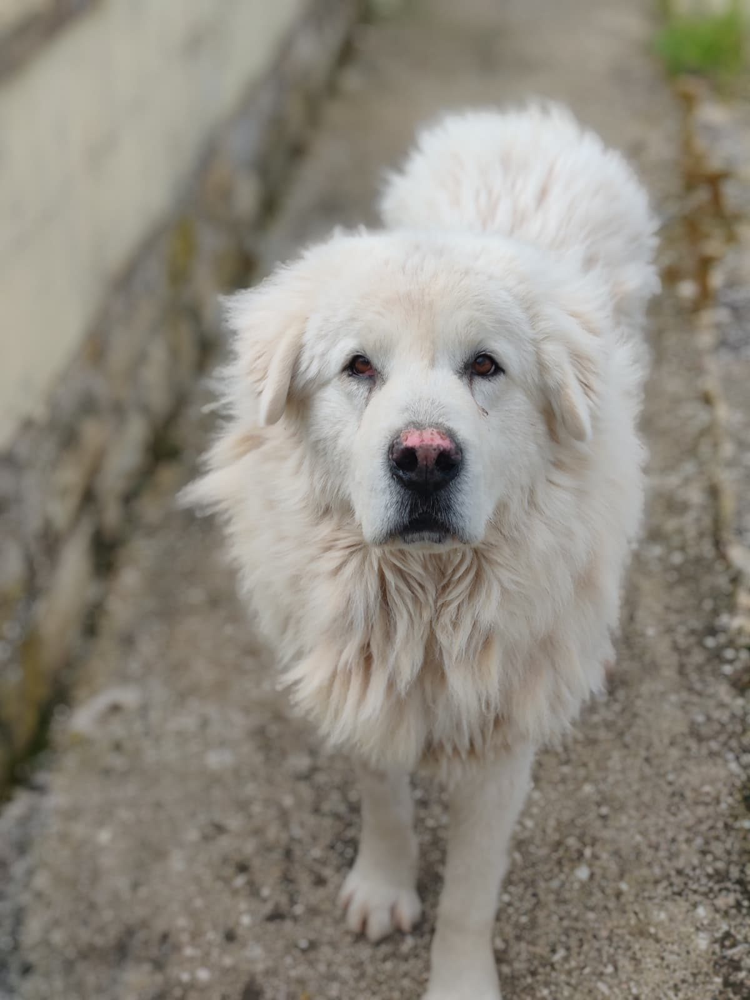
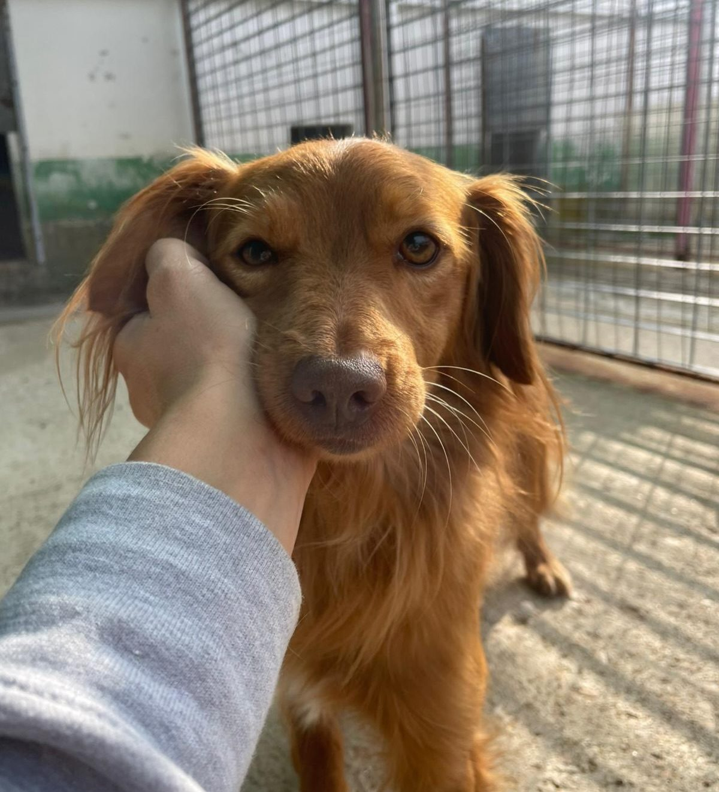
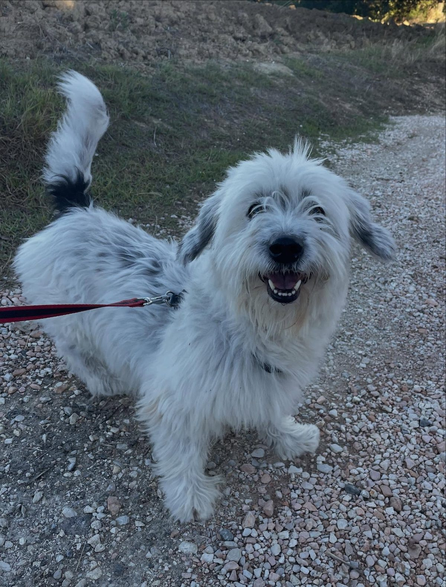

14 punti essenziali per accompagnare te e il tuo nuovo amico dalla prima settimana in avanti,
con piccoli accorgimenti che fanno una grande differenza.

Non sono regole rigide ma esperienza condivisa: quello che abbiamo imparato vivendo al fianco di centinaia di cani adottati.
Calma, sicurezza, gentilezza. Sono le tre parole che guidano ogni rapporto con il cane, sempre e in ogni situazione.
"Non toccarmi troppo, non urlarmi addosso, non fissarmi continuamente." Rispetta i suoi tempi e i suoi spazi, soprattutto nelle prime settimane.

I cani adottati spesso non hanno mai messo un guinzaglio e non rispondono al richiamo. All'inizio usa pettorina ad H antifuga, guinzaglio da 3 metri accorciabile e un collare con medaglietta o GPS.

I cambi alimentari scombussolano l'equilibrio intestinale: fermenti lattici possono essere d'aiuto. Scegli mangimi completi e nutrienti, ma facilmente digeribili.

Il cane deve masticare! Per evitare che ad essere mangiucchiato sia il divano, proponigli masticativi adeguati alla sua stazza ed età, specialmente quando resta solo. Un esempio? Il Kong.
A prescindere da provenienza e trattamenti fatti, parassiti interni ed esterni sono comuni. Niente panico: un controllo dal veterinario ti dirà come agire.
Traffico, biciclette, gatti: il mondo esterno può essere terrificante. Gradualmente ma con costanza, porta fuori il cane almeno 2 ore al giorno. Imparerà a conoscere il vostro mondo.
Può essere necessario contenere il cane o farlo desistere da certi comportamenti. Non urlare, non picchiare, non strattonare. Consulta un professionista: per ogni problema c'è una soluzione.

Nausea e rifiuto di salire sono comuni. L'approccio va fatto per pochi minuti al giorno e in modo piacevole, partendo dalla macchina spenta… e senza fretta.

Se ci sono altre bestiole in casa, proteggile dalle molestie del nuovo arrivato. Falli avvicinare in modo graduale e sicuro, senza forzare i tempi.

Metti il cane su un rialzo e abitualo a farsi toccare zampe, orecchie e coda in modo rilassante. La fiducia che instaurerai lo aiuterà anche dal veterinario.
Molte scuole cinofile offrono lezioni gratuite per gli adottanti. Farsi seguire da un professionista per l'inserimento in casa gioverà sia a voi che al vostro cane.
I cani provenienti da canili o situazioni di abbandono soffrono spesso di stress e ansia. Abbiate pazienza, restate positivi e pianificate un percorso di rieducazione con un professionista.
Porta il cane in bagno con te mentre fai la doccia: si abituerà gradualmente al rumore dell'acqua e del phon, e il bagno non diventerà un trauma.
